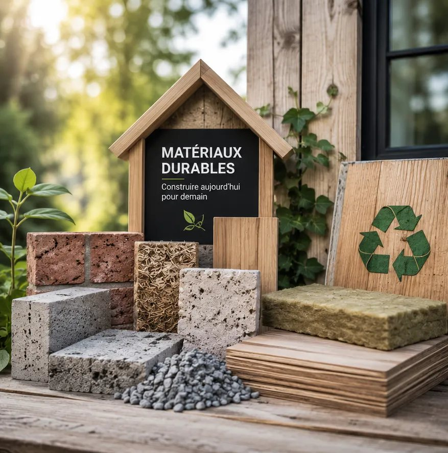

Pilotage
Un pôle principal porte l'analyse selon la nature dominante du dossier.
Organisation
Les pôles structurent l'action de TVF : repérer un lieu ou une ressource, comprendre le besoin, mobiliser les bons acteurs, préparer un cadre écrit et suivre le retour à l'usage.
Lecture institutionnelle
Les cinq pôles ne sont pas de simples catégories de communication. Ils structurent les compétences nécessaires à une revitalisation territoriale complète : identifier un bien, qualifier son usage, mobiliser les matériaux, sécuriser la participation humaine et préparer une remise en usage durable.
Chaque pôle permet d'isoler un enjeu technique ou social, tout en restant relié aux autres. C'est cette articulation qui donne à TVF sa valeur : une capacité à coordonner plutôt qu'à additionner des interventions dispersées.
Organisation
Les pôles donnent une lecture métier du dispositif : habitat, matériaux, commerce, friches et mobilisation humaine sont reliés dans un même cadre de décision.
Voir les actionsUn pôle principal porte l'analyse selon la nature dominante du dossier.
Les pôles associés complètent l'instruction lorsque le sujet devient transversal.
TVF peut compléter, visiter, instruire, conventionner, reporter ou classer un dossier.
Fondation
Les pôles ne sont pas des silos. Ils permettent de répartir les responsabilités, de clarifier les sujets à traiter et d'éviter qu'un projet reste bloqué parce qu'il manque un propriétaire, un usage, des matériaux, une collectivité, un financement ou une équipe locale.
Repères
Chaque pôle apporte une compétence précise au service d'un même objectif : remettre en usage ce qui peut redevenir utile.
Logements vacants, habitat dégradé, propriétaires, occupation temporaire, usages solidaires.
DécouvrirMatériaux réemployables, collecte, diagnostic, stockage, affectation à des projets validés.
DécouvrirLocaux fermés, vitrines inactives, artisans, services de proximité et usages temporaires.
DécouvrirTerrains délaissés, espaces verts, jardins partagés, biodiversité et nouveaux usages collectifs.
DécouvrirBénévolat, missions encadrées, formation, participation citoyenne et inclusion.
DécouvrirCadre
Chaque pôle doit produire des informations utiles à la décision, pas seulement une intention.
| Pôle | Pourquoi il existe | Missions principales | Livrables possibles |
|---|---|---|---|
| Habitat Vivant | Des biens restent inutilisés alors que les besoins locaux existent | Qualifier le bien, dialoguer avec le propriétaire, étudier les usages | Fiche propriétaire, scénarios, accord de principe |
| Matériauthèque Solidaire | Des ressources encore utiles sortent des circuits de projet | Recenser, trier, sécuriser et affecter les matériaux | Bordereau, registre, PV de remise |
| Commerce Vivant | Des locaux fermés fragilisent les rues et les centres-villes | Comprendre le local, tester des usages, relier porteurs et acteurs locaux | Fiche local, scénario d'usage, convention |
| Friches & Terrains Vivants | Des espaces délaissés peuvent devenir utiles au cadre de vie | Qualifier l'accès, les risques, les usages verts ou partagés | Audit terrain, note d'opportunité, plan d'action |
| Solidarité & Insertion | Les projets locaux peuvent créer de l'engagement et des parcours | Cadrer les missions, encadrer les actions, suivre la participation | Fiche mission, émargement, compte rendu |
Cadre
Cette synthèse aide un visiteur à comprendre rapidement quel pôle peut porter l'analyse principale d'un dossier.
| Pôle principal | Dossier typique | Pôles associés possibles | Question de décision |
|---|---|---|---|
| Habitat Vivant | Logement vacant proposé par un propriétaire | Matériauthèque, Solidarité, Financement | Le bien peut-il être étudié et sécurisé pour un usage utile ? |
| Matériauthèque Solidaire | Matériaux de chantier ou mobilier professionnel disponibles | Habitat, Commerce, Friches | La ressource est-elle réemployable, traçable et affectable ? |
| Commerce Vivant | Vitrine fermée ou local commercial inoccupé | Habitat, Solidarité, Financement | Un usage temporaire ou durable est-il réaliste ? |
| Friches & Terrains Vivants | Terrain ou espace délaissé sans usage clair | Solidarité, Matériauthèque, Collectivités | L'accès, la sécurité et la propriété permettent-ils une expérimentation ? |
| Solidarité & Insertion | Mission bénévole ou chantier participatif à cadrer | Tous les pôles selon le support | La mission est-elle utile, encadrée et proportionnée ? |
Cadre
Les pôles donnent une organisation lisible au cœur métier. Chaque pôle doit savoir ce qu'il analyse, avec quels documents, pour quels publics et jusqu'à quelle décision.
| Pôle | Sujet traité | Publics principalement concernés | Documents de référence | Décision produite |
|---|---|---|---|---|
| Habitat Vivant | Logements vacants, immeubles dégradés, usages temporaires ou solidaires | Propriétaires, collectivités, habitants, financeurs | Fiche propriétaire, accord de principe, scénarios d'usage, suivi de restitution | Étude, visite, convention, travaux à cadrer ou classement |
| Matériauthèque Solidaire | Matériaux, mobilier, équipements, surplus, invendus ou ressources de chantier | Entreprises, artisans, collectivités, associations, particuliers | Fiche entreprise, bordereau matériaux, PV de remise, registre matériaux | Acceptation, refus, stockage, affectation ou réorientation |
| Commerce Vivant | Locaux commerciaux vacants, vitrines fermées, rez-de-chaussée sans activité | Propriétaires, commerçants, artisans, communes, associations | Fiche local, fiche projet, note d'opportunité, convention d'usage | Test d'usage, recherche de porteur, occupation temporaire ou classement |
| Friches & Terrains Vivants | Friches, terrains délaissés, espaces verts potentiels, sites à sécuriser | Collectivités, propriétaires, associations, habitants, experts techniques | Fiche d'audit terrain, matrice des risques, plan d'action territorial | Étude, sécurisation, usage transitoire, projet territorial ou classement |
| Solidarité & Insertion | Missions bénévoles, chantiers encadrés, participation citoyenne, parcours d'utilité | Bénévoles, associations, structures d'insertion, habitants, jeunes et seniors | Fiche mission, consignes sécurité, feuille d'émargement, compte rendu | Mission ouverte, mission reportée, encadrement renforcé ou refus |
Cadre
Ces repères publics donnent l'échelle des sujets traités par TVF et aident à cadrer les diagnostics territoriaux.
| Sujet | Repère public récent | Source | Utilité pour TVF |
|---|---|---|---|
| Logements vacants | 3,1 millions de logements vacants en France en 2023, soit plus de 8 % du parc de logements. | INSEE, relayé par Banque des Territoires / Localtis, janvier 2024 | Cibler les territoires où la vacance est structurelle et préparer le dialogue avec les propriétaires. |
| Déchets du bâtiment | Environ 42 millions de tonnes de déchets par an pour le secteur du bâtiment ; la filière REP PMCB vise collecte, traçabilité, recyclage, réemploi et réutilisation. | Ministère de la Transition écologique, page PMCB mise à jour en novembre 2025 | Relier la matériauthèque TVF à une logique de projet, de traçabilité et d'économie circulaire. |
| Friches | Cartofriches consolide des données ouvertes, des observatoires locaux et des statuts de friches à l'échelle nationale. | Cerema, Cartofriches | Préparer des cartes et diagnostics sans exposer des sites sensibles ni inventer de recensement. |
| Recyclage foncier | Les politiques de recyclage foncier et de sobriété foncière encouragent la réutilisation de sites déjà artificialisés avant l'extension urbaine. | Cerema, Cartofriches et ressources friches | Aider à formuler des dossiers compatibles avec les politiques de recyclage foncier et de sobriété foncière. |

Approche
Ce pôle s'adresse d'abord aux propriétaires, collectivités et habitants confrontés à des logements vacants, dégradés ou sans usage clair. TVF ne promet pas une rénovation immédiate : l'objectif est de qualifier le bien, comprendre les contraintes, identifier les usages réalistes et préparer un cadre de coopération.

Approche
Ce pôle transforme les matériaux disponibles en ressources de projet. Une porte, du bois, du carrelage, du mobilier ou un équipement technique ne sont utiles que s'ils sont identifiés, stockables, sécurisés et affectés à un usage concret.

Approche
Ce pôle travaille sur les vitrines fermées, locaux vacants et rez-de-chaussée sans activité. L'objectif est de préparer des usages réalistes : activité de proximité, artisanat, association, atelier, service, occupation temporaire ou expérimentation locale.

Approche
Ce pôle regarde les espaces délaissés comme des réserves d'usage possible : jardin partagé, espace pédagogique, lieu associatif, biodiversité, équipement temporaire ou projet territorial. La sécurité, l'accès et la propriété restent toujours les premiers points à vérifier.

Approche
Ce pôle permet aux habitants, bénévoles, associations et publics accompagnés de participer à des actions utiles sans improvisation. Les missions doivent être claires, encadrées, sécurisées et documentées.

Approche
Un même projet peut mobiliser plusieurs pôles. Un logement vacant peut nécessiter des matériaux de réemploi, une convention avec un propriétaire, un appui de collectivité, un chantier encadré et un suivi d'impact. TVF sert à organiser cette coordination étape par étape.
Cadre
Un projet crédible ne dépend presque jamais d'un seul pôle. Cette synthèse aide à comprendre qui porte le dossier principal et quels pôles interviennent en appui.
| Situation de départ | Pôle principal | Pôles associés | Livrable final attendu |
|---|---|---|---|
| Un logement vacant proposé par un propriétaire | Habitat Vivant | Matériauthèque Solidaire, Solidarité & Insertion, Financement | Scénario d'usage, budget, accord propriétaire, convention possible |
| Un commerce fermé en centre-ville | Commerce Vivant | Habitat Vivant, Matériauthèque Solidaire, Collectivités | Note d'opportunité, usage compatible, porteur identifié ou besoin de recherche |
| Des matériaux disponibles chez une entreprise | Matériauthèque Solidaire | Habitat Vivant, Friches & Terrains Vivants, Solidarité & Insertion | Registre, état, conditions de retrait, affectation à un projet validé |
| Un terrain délaissé dans un quartier | Friches & Terrains Vivants | Solidarité & Insertion, Collectivités, Matériauthèque Solidaire | Audit terrain, risques, usages possibles, plan d'action local |
| Une mission citoyenne ou bénévole | Solidarité & Insertion | Tous les pôles selon le support de mission | Fiche mission, consignes, référent, émargement et compte rendu |
Méthode
Un lieu, une ressource ou un besoin est identifié.
TVF choisit le pôle qui porte l'analyse principale.
Les autres pôles complètent : matériaux, insertion, commerce, friche ou habitat.
Convention, autorisation, budget, sécurité et responsabilités sont préparés.
Les résultats ne sont publiés qu'après réalisation et vérification.
FAQ
Des réponses courtes pour comprendre le cadre TVF sans jargon.
Les pôles rendent la méthode lisible. Ils permettent de traiter séparément l'habitat, les commerces, les friches, les matériaux et l'engagement humain, tout en les reliant dans un même projet.
Oui. C'est même fréquent : un bâtiment vacant peut mobiliser Habitat Vivant, Matériauthèque Solidaire, Solidarité & Insertion et parfois Commerce Vivant.
TVF l'identifie après qualification du besoin, des contraintes, des acteurs et de l'usage envisagé.
Ils structurent la méthode et les dossiers à instruire. Les résultats relèveront ensuite des pages Impact et Transparence.
Suite
Trois entrées ciblées pour poursuivre sans perdre le fil de votre parcours.
Passer à l'étape suivante
Présentez la situation à TVF pour préparer un premier échange clair et utile.